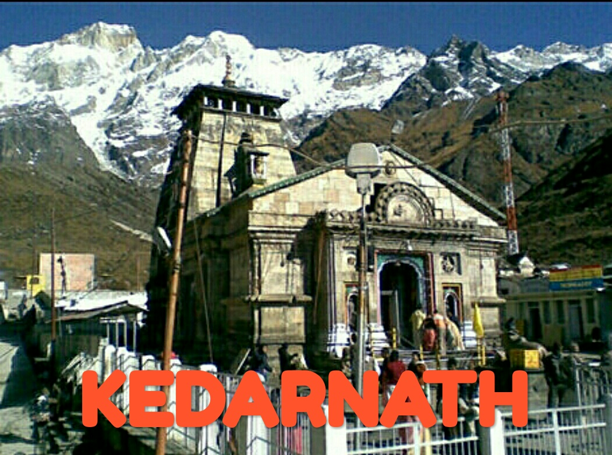
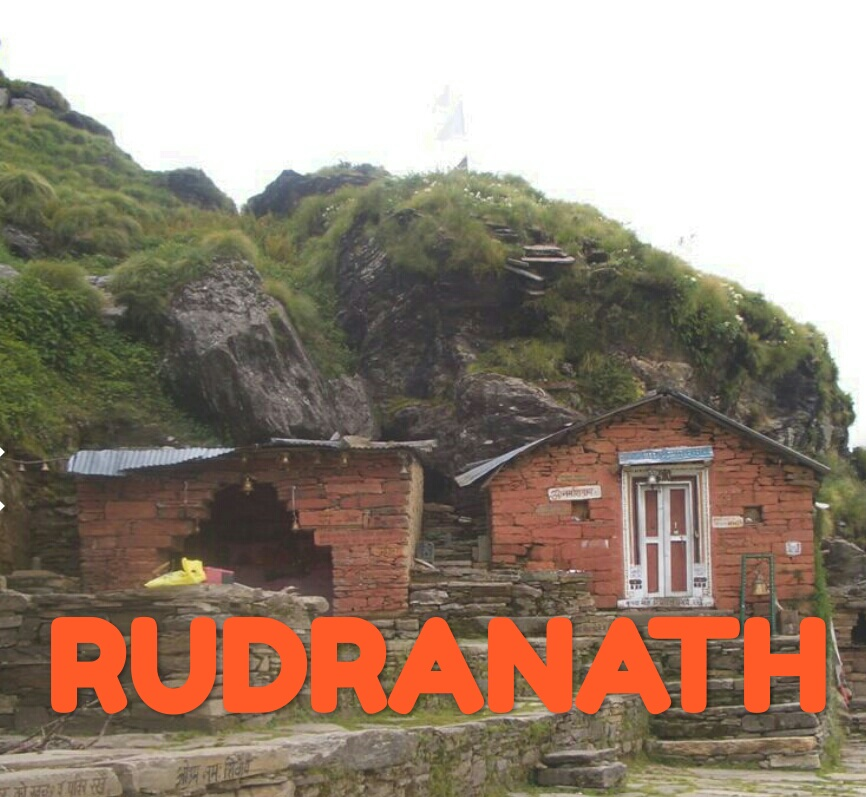
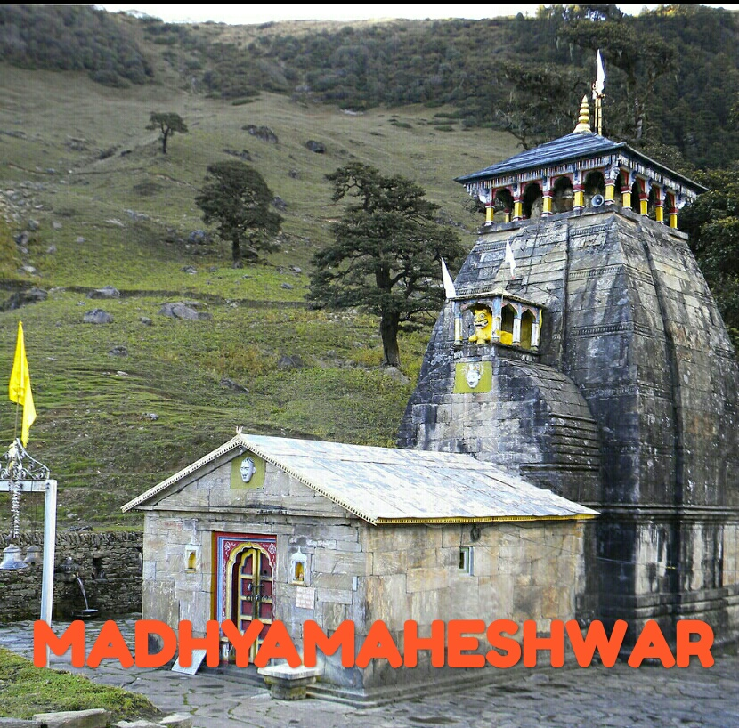

|
 | |
 |  | |
Madhyamaheshwar or Madmaheshwar is a Hindu temple dedicated to god Shiva, located in the Mansoona village of Garhwal Himalayas in Uttarakhand, India. Situated at an elevation of 3,497 m (11,473.1 ft), it is the fourth temple to be visited in the Panch Kedar pilgrimage circuit, comprising five Shiva temples in the Garhwal region. The other temples in the circuit include: Kedarnath, Tungnath and Rudranath to be visited before Madmaheshwar and Kalpeshwar to be visited after Madmaheshwar. The middle (madhya) or belly part or navel (nabhi) of the bull, considered a divine form of Shiva, is worshipped at this temple, believed to be built by the Pandavas, the heroes of the Hindu epic Mahabharata.
Legend
The legend of Madhyamaheswar is an integral part of the legend of Panch Kedar, which is a captivating narration of the efforts of Pandavas to atone for the sins of their fratricide (gotra- hatya) act of killing their cousins, the Kauravas, and Brahmanahatya (killing of Brahmins - the priest class), during the epic Mahabharata war. On advice from sages and their trusted benefactor god Krishna they sought Lord Shiva to pardon them and bless them to attain salvation. Since Shiva was annoyed with them for their conduct during the Kurukshetra war, he tried to avoid them by assuming the animal form of a bull or Nandi and left for the Himalayan Garhwal region. But the determined Pandavas, after sighting Shiva in the form of the bull grazing in the hills of Guptakashi, tried to forcibly hold the bull by its tail and hind legs. But the bull disappeared into the ground to reappear later in his original self of Lord Shiva at five places; in the form of a hump at Kedarnath, in the shape of bahu (arms) at Tungnath, with his face at Rudranath, his nabhi (navel) and stomach at Madhyamaheswar and his hair (locks) called jata at Kalpeshwar. Pandavas, pleased with the revelation of Lord Shiva at five places in different forms, built temples at these five places, worshipped him and attained salvation with blessings of Shiva.
Structure
The temple in the north Indian style of architecture, is situated in a lush meadow, just below a high ridge. The older, so-called 'Vriddh-Madmaheshwar', temple is a tiny blackened shrine on the ridge, which looks straight up at the commanding Chaukhamba peaks. In the current temple, a navel-shaped Shiva-lingam, made of black stone, is enshrined in the sanctum. There are two other smaller shrines, one for Shiva’s consort Parvati and the other dedicated to the Ardhanarishwara, a half-Shiva half-Parvati image. Bhima, the second Pandava brother is believed to have built this temple and worshipped Shiva here. To the right of the main temple there is a small temple where the image of Saraswati, the Hindu goddess of learning, made of marble is installed in the sanctum.
Worship
The water from the temple precincts is considered so highly sacred that even a few drops are stated to be adequate for ablution. The worship at this temple starts with a specified time period from the beginning of the summer months after the winter and lasts till October/November from start of the winter season when the temple precincts are not accessible due to snow conditions. During the winter period, the symbolic idol of the god is shifted with religious formalities to Ukhimath for continued worship. Priests at this temple, as in many other temples in the state, are from South India and at this particular temple they are called Jangamas of the Lingayat cast who hail from Mysore in Karnataka state. This induction of priests from outside the state enhances the cultural communications from one part of the country to the other, with language becoming no barrier. It is one of an important sacred pilgrimage centres of Shastrik (textual) importance categorized as Panchasthali (five places) doctrine. This doctrine has been determined on the basis of sectarian association, fairs and festivals, offerings to the deity, sacred declarations made by devotees and specific blessings sought from the god through prayers at different temples. 2 km. away is a small temple called Bura Madhyamaheswar. One has to trek 2 kilometers up the steep ways through large moors and valleys and then would reach in a small lake, where a full Panoramic range of Himalayas consisting of the peaks, Chaukhamba, Kedarnath, Neelkanth, Trishul, Kamet, Panchulli, etc.
Geography
The temple is in a green valley surrounded by snow peaks of Chaukhamba (literal meaning is four pillars or peaks), Neel Kanth and Kedarnath in high Himalayan hill ranges. The Kedar hills, called the Kedar Massif, gives a view of the mountain formation with a number of glaciers which include the source of the Mandakini River. The region has rich flora and fauna, particularly the endangered species of Himalayan monalpheasant and Himalayan musk deer (locally called Kasturi deer) in the Kedarnath Wild Life Sanctuary.
Access
The total trek length to cover all the five temples of Panch Kedar is about 170 km (105.6 mi) (including road travel up to Gaurikund), involving 16 days of effort. The trek starts from Gauri Kund, from which there are views of the Himalayan range of hills and the broader Garhwal region, comparable to the Alps.
The trekking is undertaken during two seasons; three months during summer and two months after the monsoon season, as during the rest of the period, except Rudranath, the other four Panch Kedar temples are inaccessible due to snow cover.
Madhyamaheshwar Temple is on the Kedarnath road linked by a 13 km (8.1 mi) road to Kalimath from Guptakashi (1,319 m (4,327.4 ft)). Further approach from Guptakashi to the temple (3,490 m (11,450.1 ft)) is only by a 24 km (14.9 mi) trek after 6 km (3.7 mi) by road journey. Guptakashi is on the state highway from Rishikesh via Devprayag, Rudraprayag and Kund. Rishikesh is the entry point to the pilgrim centres of Garhwal Himalayas and is connected by train to the rest of the country. The nearest airport is Jolly Grant at a distance of 18 km (11.2 mi) from Rishikesh, closer to Dehradun, which connects to other destinations in India. The temple is at a distance of 244 km (151.6 mi) from the airport and 227 km (141.1 mi) from Rishikesh, the rail head. From Rishikesh to Kalimath the road distance is 196 km (121.8 mi). Alternatively, Madhmaheshwar shrine could be reached from Mansoona,Buruwa and Uniyana, via Ukhimath. From Ukhimath, the route passes through Mansoona(7 km),Buruwa(4 km),Ransi (3 km) then Gaundhar (9 km), Bantoli (1 km) and further 9 km moderate climb via Khakhra Khal, and Maikhumba to reach the temple.
The base of the trek is Uniana which is 18 kilometres away from Ukhimath. From there the trekking way starts. After 3 kilometres is Ransi village a small chatti, with a place to stay. Then after long 6 km. comes Gaundhar where there are 3 lodges to stay. After 1 km lies Bantoli, the point of confluence of Madhyamaheswar Ganga and Martyenda Ganga. Then comes Khatara, Nanu, and then comes Madhyamaheswar. The proper trekking distance is 19 kilometres from Uniana.
Gaundhar and Kalimath are two important places on the route to Madhyamaheshwar. Kalimath (1,463 m (4,799.9 ft)) in particular, is of importance for the large number of pilgrims who visit the place for spiritual comfort and hence it is called the Sidh Peeth (Spiritual center). Kalimath is famous for the temples to goddesses Mahakali and Mahalakshmi, and gods Shiva and one of his ferocious forms - Bhairava. The navratri time is of special significance at this place when much large devotees visit the place. Gaundhar, the last settlement on the trek route and close to the temple, is at the confluence of Madhyamaheshwar Ganga and Markanga Ganga rivers and offers enchanting views.